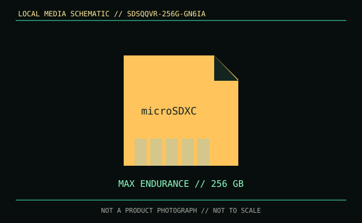

[ REMOVABLE MEDIA // PRODUCT RECORD ]
SanDisk MAX Endurance microSDXC 256 GB (SDSQQVR-256G-GN6IA)
Capacity-specific microSDXC flash memory card. “MAX Endurance” identifies the product family and does not promise a fixed retention period or archival life.

MEDIA ONLY: SanDisk model SDSQQVR-256G-GN6IA, 256 GB microSDXC. It is a memory card, not a reader or host device.
Capacity, format and compatibility
| Manufacturer model / format | SDSQQVR-256G-GN6IA; microSDXC, UHS-I family |
|---|---|
| Nominal capacity | 256 GB nominal. Usable capacity varies with formatting and host-reserved space. |
| Reader or drive support | Requires a microSDXC-capable host or reader that documents support for 256 GB. A microSD-to-SD adapter changes physical fit only; it does not add SDXC support to an incompatible host. |
| Write protection | The microSD card has no physical lock slider. A full-size SD adapter may have a reader-detected lock tab; confirm the reader honors it. |
| Revision and compatibility limit | Use the complete part number and the camera/device maker's card-capacity, filesystem, and bus-mode compatibility list. Similar capacity or physical fit alone does not establish support. |
Handling, longevity and preservation
The product-family name does not establish a fixed shelf life. Flash retention and endurance depend on use, age, storage conditions, and the host's workload. Keep the card dry and capped or cased; avoid touching its contacts, heat, contamination, and removal during writes. Confirm safe-eject behavior in the host manual.
- Record the printed model, host device, filesystem, acquisition date, and any media errors.
- Periodically read and verify data, retain checksums, and keep independent copies on separate media. Do not rely on a single card for long-term preservation.
Sources and standards
- SanDisk — MAX Endurance microSDXC UHS-I, 256 GB modelManufacturer product family and capacity-specific SKU information.
- SD Association — SD family, capacity classes and bus modesOfficial standard overview for SDXC and UHS family terminology.
- Library of Congress — Digital preservation formatsPreservation guidance; supports multiple copies and continuing readability rather than a fixed shelf-life claim.